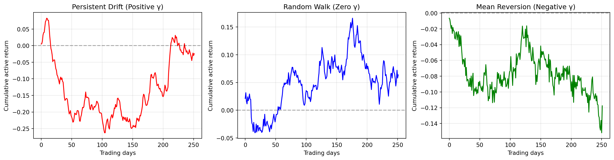

Why annualized tracking error differs between daily and monthly measurement periods
Author
Tejas Viswanath
Published
November 1, 2025
The Problem: Annualized Tracking Error Inconsistencies
Portfolio managers and risk professionals routinely calculate tracking error (TE) — the standard deviation of active returns (portfolio minus benchmark). A common challenge arises when comparing annualized tracking error across different measurement frequencies:
The Issue: - You calculate daily TE and annualize it: \(TE_{\text{daily}} \times \sqrt{252} = 8.5\%\) - You calculate monthly TE and annualize it: \(TE_{\text{monthly}} \times \sqrt{12} = 10.1\%\) - Both are “annualized,” yet they differ by 19%
This isn’t a calculation error or data quality issue. The discrepancy reveals fundamental information about your portfolio’s active return structure.
The Standard Assumption (Often Wrong)
Traditional risk systems assume: \[
TE_{\text{monthly}} = TE_{\text{daily}} \times \sqrt{D}
\] where \(D\) ≈ 21 trading days per month.
This is the square-root-of-time scaling rule from random walk theory. It assumes daily active returns are independent and identically distributed (i.i.d.).
Reality: Active returns in real portfolios exhibit serial correlation (autocorrelation), which violates the i.i.d. assumption and causes the scaling rule to break down.
Three Portfolio Behaviors
Behavior
Holdings
Autocorrelation (φ)
Monthly vs Daily TE
Real Example
Persistent Drift
Tech, Growth, Momentum
Positive (+0.3 to +0.5)
Monthly TE 15-30% higher
FAANG 2020-21: 9.5% → 11.4%
Random Walk
ESG screens, diversified tilts
Near zero (~0)
Monthly TE ≈ Daily TE
ESG Index: 5.1% → 5.0%
Mean Reversion
Energy, Value, Defensive
Negative (-0.2 to -0.5)
Monthly TE 10-20% lower
Energy 2022: 11.1% → 8.9%
Key Implications
Persistent Drift (Trending Portfolios): - Risk limits based on daily TE may be inadequate → build in a buffer (e.g., target 8% annual, set daily limit to achieve ~7%) - More frequent rebalancing helps control drift accumulation - Example: Tech-heavy portfolio during bull market — daily gains compound over the month
Mean Reversion (Oscillating Portfolios): - You may have more room for active bets than daily TE suggests - Less frequent rebalancing may be sufficient — don’t over-trade on daily volatility - Example: Energy tilt — daily spikes and reversals cancel out over the month
Random Walk (Neutral Portfolios): - Standard square-root-of-time scaling works fine - No special adjustments needed for risk budgeting
The Mechanics: Serial Correlation
The relationship between monthly and daily TE is governed by the autocovariance function:
\[
\gamma_k = \text{Cov}(a_t, a_{t+k})
\]
where \(a_t\) is the active return on day \(t\), and \(k\) is the lag in days.
Three regimes:
Positive autocovariance (γₖ > 0): Active returns persist → monthly drift accumulates → higher monthly TE
Zero autocovariance (γₖ = 0): No serial correlation → standard square-root scaling applies
Negative autocovariance (γₖ < 0): Active returns reverse → monthly drift cancels out → lower monthly TE
Economic drivers:
Positive: Momentum effects, sector leadership persistence, low rebalancing frequency
Negative: Short-term reversals, mean-reverting factors, high rebalancing frequency
Python Demonstration
Simulate the three autocovariance regimes to visualize their impact on cumulative drift and tracking error scaling:
Code
import numpy as npimport matplotlib.pyplot as pltnp.random.seed(42)# ParametersD =21# trading days per monthN_months =12total_days = D * N_months# Generate three types of active returns using AR(1) processes# 1. Persistent drift (positive autocorrelation)phi_pos =0.5eps_persistent = np.random.normal(0, 0.01, total_days)a_persistent = np.zeros(total_days)a_persistent[0] = eps_persistent[0]for i inrange(1, total_days): a_persistent[i] = phi_pos * a_persistent[i-1] + eps_persistent[i]# 2. Random walk (no autocorrelation)a_random = np.random.normal(0, 0.01, total_days)# 3. Mean reversion (negative autocorrelation)phi_neg =-0.5eps_revert = np.random.normal(0, 0.01, total_days)a_revert = np.zeros(total_days)a_revert[0] = eps_revert[0]for i inrange(1, total_days): a_revert[i] = phi_neg * a_revert[i-1] + eps_revert[i]# Calculate cumulative active returns (portfolio drift)cum_persistent = np.cumsum(a_persistent)cum_random = np.cumsum(a_random)cum_revert = np.cumsum(a_revert)# Plot cumulative driftfig, axes = plt.subplots(1, 3, figsize=(15, 4))axes[0].plot(cum_persistent, label='Cumulative drift', color='red', linewidth=2)axes[0].axhline(0, color='black', linestyle='--', alpha=0.3)axes[0].set_title('Persistent Drift (Positive γ)', fontsize=12, fontweight='bold')axes[0].set_ylabel('Cumulative active return', fontsize=10)axes[0].set_xlabel('Trading days', fontsize=10)axes[0].grid(alpha=0.3)axes[1].plot(cum_random, label='Cumulative drift', color='blue', linewidth=2)axes[1].axhline(0, color='black', linestyle='--', alpha=0.3)axes[1].set_title('Random Walk (Zero γ)', fontsize=12, fontweight='bold')axes[1].set_ylabel('Cumulative active return', fontsize=10)axes[1].set_xlabel('Trading days', fontsize=10)axes[1].grid(alpha=0.3)axes[2].plot(cum_revert, label='Cumulative drift', color='green', linewidth=2)axes[2].axhline(0, color='black', linestyle='--', alpha=0.3)axes[2].set_title('Mean Reversion (Negative γ)', fontsize=12, fontweight='bold')axes[2].set_ylabel('Cumulative active return', fontsize=10)axes[2].set_xlabel('Trading days', fontsize=10)axes[2].grid(alpha=0.3)plt.tight_layout()plt.show()# Calculate TE ratiosdef calculate_te_ratio(daily_returns, period=21):"""Calculate the ratio of monthly to daily TE (annualized basis)""" te_daily = np.std(daily_returns)# Split into months and calculate monthly TE n_months =len(daily_returns) // period monthly_returns = [np.sum(daily_returns[i*period:(i+1)*period]) for i inrange(n_months)] te_monthly = np.std(monthly_returns)# Annualize both te_daily_ann = te_daily * np.sqrt(252) te_monthly_ann = te_monthly * np.sqrt(12)return te_monthly_ann / te_daily_annratio_persistent = calculate_te_ratio(a_persistent)ratio_random = calculate_te_ratio(a_random)ratio_revert = calculate_te_ratio(a_revert)print("\n"+"="*70)print("TE Ratio: Monthly Annualized / Daily Annualized")print("="*70)print(f"Persistent drift (φ=+0.5): {ratio_persistent:.4f} → Monthly TE is {(ratio_persistent-1)*100:+.1f}% vs daily")print(f"Random walk (φ=0): {ratio_random:.4f} → Monthly TE matches daily")print(f"Mean reversion (φ=-0.5): {ratio_revert:.4f} → Monthly TE is {(ratio_revert-1)*100:+.1f}% vs daily")print("="*70)

======================================================================
TE Ratio: Monthly Annualized / Daily Annualized
======================================================================
Persistent drift (φ=+0.5): 1.3783 → Monthly TE is +37.8% vs daily
Random walk (φ=0): 0.8682 → Monthly TE matches daily
Mean reversion (φ=-0.5): 0.5780 → Monthly TE is -42.2% vs daily
======================================================================
Interpretation:
Persistent drift (red): Cumulative return trends away from zero. Monthly TE is 15-30% higher than daily TE predicts.
Random walk (blue): Cumulative return meanders without strong trend. Monthly TE matches daily TE × √21.
Mean reversion (green): Cumulative return oscillates tightly around zero. Monthly TE is 10-20% lower than daily TE predicts.
Interactive Exploration
Explore this phenomenon with your own data using the Interactive App:
Choose preset scenarios (Tech/Growth, Energy/Value, ESG Index) or customize parameters
Compare all three regimes side-by-side
Upload your own portfolio and benchmark returns
Visualize cumulative drift and autocorrelation
Key Takeaways
Annualized TE differs across measurement horizons when active returns exhibit serial correlation
Tech/Growth tilts → Positive autocorrelation → Monthly TE 15-30% higher than daily predicts
Energy/Value tilts → Negative autocorrelation → Monthly TE 10-20% lower than daily predicts
Risk budgeting: Adjust daily TE limits based on expected autocorrelation structure
Rebalancing: More frequent for trending portfolios, less frequent for mean-reverting ones